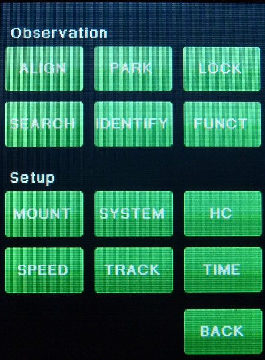

|
Gemini-2 and Gemini-1 Telescope Mount Controllers Website and Tutorials |
| Interactive Hand-Controller Menus - click on green buttons to Navigate |
|  |
This screen has changed with Version 5.2 of the firmware. The Site
button has been replaced with the System button. This is the main menu selection screen. Each of the selections may have one or more sub-menus. We'll go to the hand-controller menu items next. Clicking on the HC button on the left will take you to that menu. However all buttons do work, and will take you to the menu for that button when you click on it. |